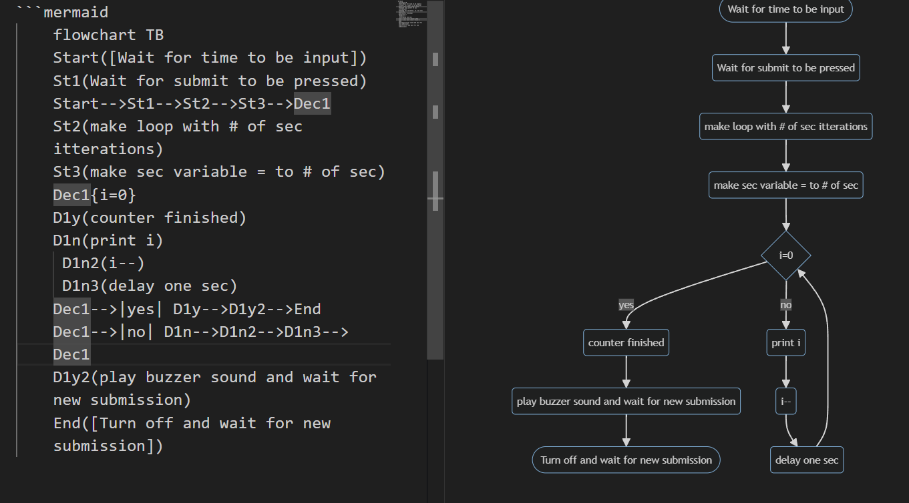

This is a final project for my CSC102 summer course with Prof. Prater
You should have at least 3 items from this list - decision logic (if/else), loops,
string manipulation and validation, functions, classes, and objects
The number of seconds left
Press submit to begin countdown
